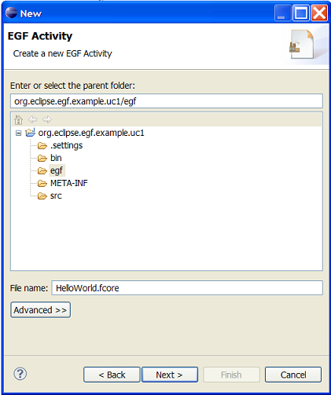
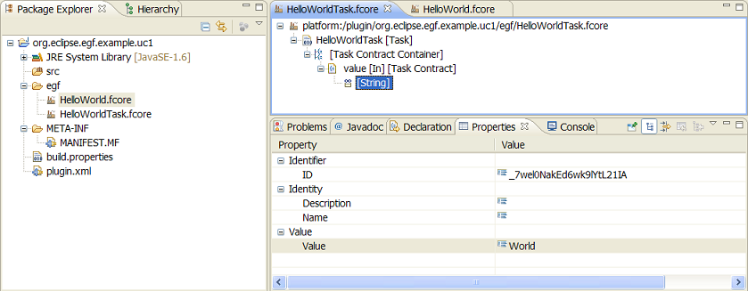

EGF Tutorial - Factory Component. First steps. |
This first tutorial explains how to create and execute simple factory components with EGF.
Generation activities. A generation can be decomposed into generation stages down to generation leaves that realize a generation task. In EGF, this corresponds to factory components that delegate their generations to other factory components until tasks that realizes a generation task.
Storage. Factory components and tasks are stored in fcore files.
The sequence of actions to create a factory component:
The sequence of actions is the same for creating a task: select Task as model object instead of Factory Component.
Create a Factory component named HelloWorld and a Task named HelloWorldTask.

Contracts. In EGF, a task parameter is named Contract. Task contracts are contained in a Task Contract Container. A Contract has a Name, Mode (IN, OUT, IN_OUT), is mandatory or not, has a Type, and possibly a default value.
Implementation. It is necessary to differentiate the task declaration, defined in a fcore model, and the task implementation, defined in a Java class. The task implementation is the means to execute any generation tool, or to do more. The Java class implements an ITaskProduction interface. It can implement three methods: preExecute, doExecute, postExecute. The task methods have a context parameter to get and work with the task contracts. The link between the Task and the task Java class is realized at the task level.
Task modeling - The sequence of actions to create task contracts:
Create a Task contract 'value' of String contract type with the (default) value 'World'.

Task implementation - The sequence of actions to create and associate a task Java Class:
Create a task Java class 'HelloWorld' that displays an parameterized Hello message. Example of code:
import org.eclipse.core.runtime.IProgressMonitor;
import org.eclipse.egf.core.EGFCorePlugin;
import org.eclipse.egf.core.producer.InvocationException;
import org.eclipse.egf.fprod.producer.context.ITaskProductionContext;
import org.eclipse.egf.fprod.producer.invocation.ITaskProduction;
public class HelloWorld implements ITaskProduction {
@Override
public void doExecute(final ITaskProductionContext context, final IProgressMonitor monitor_p) throws InvocationException {
String value = taskProductionContext.getInputValue("value", String.class);
String outputMessage = new String ("Hello " + value + "!");
// Message on the default console
System.out.println(outputMessage);
// Message on the EGF console
EGFCorePlugin.getDefault().logInfo(outputMessage);
}
@Override
public void preExecute(final ITaskProductionContext context, final IProgressMonitor monitor_p) throws InvocationException {
// TODO Auto-generated method stub
}
@Override
public void postExecute(final ITaskProductionContext context, final IProgressMonitor monitor_p) throws InvocationException {
// TODO Auto-generated method stub
}
}
Orchestration. >The same task can be invoked by different factory components and several times inside the same factory component. The last point underlies the need of orchestration. EGF proposes a simple orchestration mode named production plan. A production is a sorted list of task invocations. A task invocation calls a task with the values required by the task contracts.
The sequence of actions to create a production plan:
The sequence of actions to create a task invocation in a production plan:
The sequence of actions to create task invocation values in a task invocation:
The two last steps are necessary when the default value of the task contract must be redefined or is undefined and madatory.
Create a task invocation without Invocation Context (the default value of the task contract is used) and one with.
Execution mode. There are two modes to execute a task or factory component: 1) dynamically, directly on the model, 2) in a deployed mode. The dynamic execution is useful to simultaneously develop and test tasks and factory components. Before execution, it is controled that the model is valid. The EGF production settings are accessible via the EGF preferences.
The sequence of actions to execute a task or factory component dynamically: